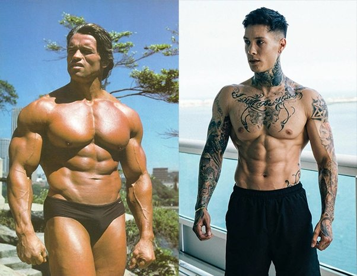

Anabolized x Natural: Exploring the Divide in Bodybuilding
In the world of bodybuilding, a heated debate has raged on for decades: anabolized (enhanced) bodybuilding versus natural bodybuilding. This clash of philosophies has divided athletes, trainers, and fans alike. In this blog post, we will delve into the heart of this controversy, exploring the key differences between the two approaches and shedding light on the pros and cons of each.
Anabolized Bodybuilding:
Anabolized bodybuilding is often associated with the use of performance-enhancing substances, such as anabolic steroids and growth hormone. Athletes who follow this path seek rapid muscle growth and increased strength beyond what their natural genetics might allow. The allure of quick gains can be tempting, but it comes at a high cost.
Pros:
- Rapid Muscle Growth: Anabolized bodybuilders can experience significant muscle growth in a relatively short time.
- Enhanced Recovery: Faster recovery times mean more frequent and intense workouts.
- Competitive Advantage: In professional bodybuilding, where drug testing may be lax, anabolized competitors often have an edge.
Cons:
- Health Risks: The use of performance-enhancing substances can lead to severe health issues, including heart problems and hormonal imbalances.
- Legal Consequences: In many countries, the possession and use of these substances are illegal without a prescription.
- Stigma: Anabolized bodybuilders often face skepticism and criticism within the fitness community.
Natural Bodybuilding:
Natural bodybuilding, on the other hand, emphasizes building a physique through hard work, dedication, and natural means. Athletes in this category rely solely on their genetics, nutrition, training, and recovery to achieve their goals.
Pros:
- Long-Term Health: Natural bodybuilders generally prioritize health and longevity over rapid muscle gain.
- Achievement through Dedication: Success in natural bodybuilding showcases an athlete's dedication and hard work.
- Clean Competition: In natural bodybuilding competitions, athletes compete on a level playing field without the influence of performance-enhancing substances.
Cons:
- Slower Progress: Gains in natural bodybuilding take time and patience.
- Genetic Limitations: Some individuals may have genetic limitations that prevent them from reaching certain physique goals
- Lower Competitive Ceiling: Natural bodybuilding competitions may not offer the same financial rewards as the professional circuit.
Conclusion:
The debate between anabolized and natural bodybuilding remains a central topic in the fitness world. Ultimately, the choice between the two approaches is a deeply personal one, shaped by individual goals, values, and risk tolerance. It's crucial for athletes to educate themselves about the potential consequences and ethical considerations associated with their chosen path. While both routes have their merits, the decision should align with the overarching principle of promoting a healthy, balanced lifestyle that prioritizes long-term well-being.